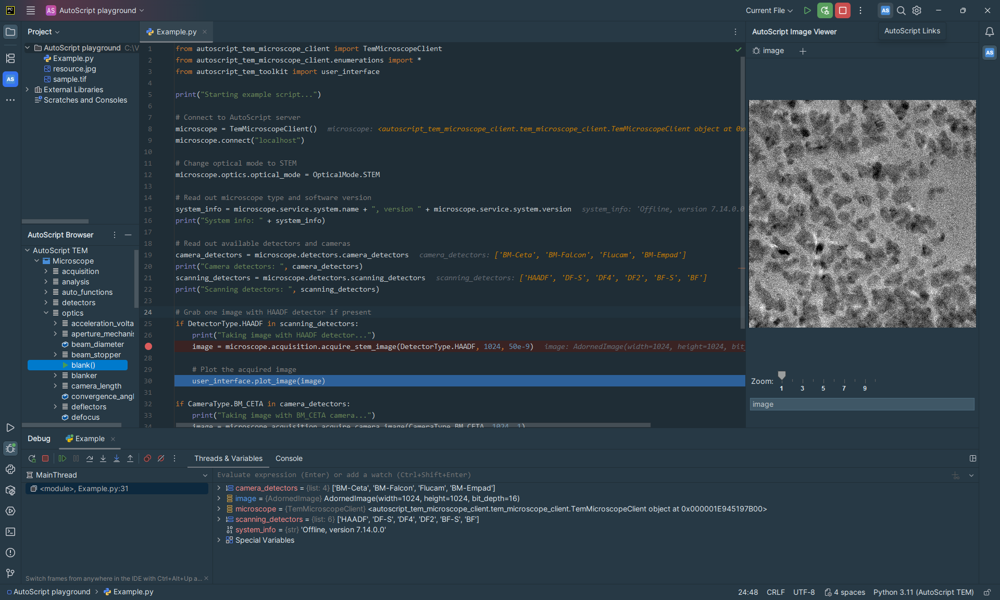
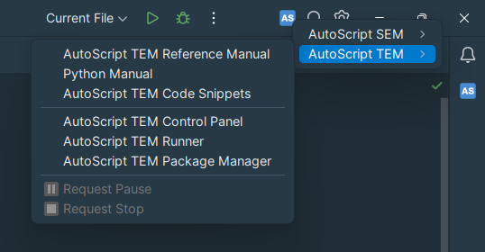
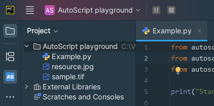

PyCharm is a dedicated Python Integrated Development Environment (IDE) from JetBrains. It provides a wide range of essential tools for Python developers, tightly integrated to create a convenient environment for productive data science development.
The AutoScript TEM product includes the PyCharm Community editor. A detailed user manual for PyCharm IDE can be found online on the vendor's website https://www.jetbrains.com/help/pycharm.
During product installation, PyCharm is extended with custom plugins that provide AutoScript-specific functionality. Below is a screenshot of the PyCharm editor with the AutoScript extensions installed:

The panel visualizes the microscope API structure and allows you to easily navigate between objects, their methods and properties. Double-clicking on an API element copies a code snippet to the editor area. additionally double-clicking on the root Microscope element copies the AutoScript initialization code to the editor. Additional functions are available from the context menu.
The panel can be used during code debugging to visualize the contents of variables of type AdornedImage. This is especially useful when applying image processing routines to the image, as you can immediately see the effects of the processing. To add a variable to the panel when debugging, type its name in the text box at the bottom or right-click the variable in the "Variables" tool window and choose "View as Image".
Pressing Shift + F1 while the cursor is on an API element, such as class, method or property, opens this reference manual to a page describing the details of the element, often with usage examples.
PyCharm with AutoScript plugins installed allows creating requests to pause or graceful stop of the script execution at a specific script line (see User guide: Pause/Stop script execution). Pause or stop requests can be created directly in the PyCharm editor thanks to the AutoScript plugin.
The AS icon in the main toolbar shows a drop-down menu with "Request Pause" and "Request Stop" entries displayed. These buttons that can be clicked during script execution. The stop or pause request can be cancelled by clicking the given button again.

- the buttons are disabled, request can not be sent. The script is either not running or a different action has already been requested.
- the buttons are clickable and clicking them will request the corresponding action.
- the corresponding action has been requested. It is possible to cancel the request by clicking the button again.
- the script execution has been paused. Clicking the button button resumes script execution.
It is also possible to pin the request buttons directly to the main toolbar. By default, the buttons are accessible only from the AS drop-down menu to keep the main toolbar clutter-free. Pin the request buttons to the main toolbar by following the instructions below:
The main toolbar with the two pinned buttons looks like this:

In the current version of the AutoScript plugin, it is not possible to send pause/stop requests for multiple running scripts in PyCharm. If multiple scripts are running in one instance of the PyCharm editor, the Request Pause/Stop buttons only work for the most recently executed script.